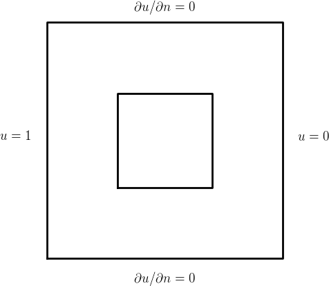

Developing a more advanced heat equation solver
This chapter is devoted to some important topics when solving
time-dependent problems with FEniCS: avoiding unnecessary assembly,
dealing with time-dependent Expression objects, debugging the coding of
variational forms, saving results to file, and making animations. We
illustrate these techniques in a welding problem and go through all
aspects of the code development, from scaling of the physical problem
via debugging to constructing unit tests.
The PDE to be addressed is the heat equation $$ \varrho c \frac{\partial u}{\partial t} = \nabla\cdot(p\nabla u) + f,$$ with initial condition \( u=I \) and various types of Dirichlet, Neumann, and Robin conditions. The primary unknown is supposed to represent the temperature, and the PDE governs heat transport in a solid heterogeneous material. The physical parameters, which may vary in space, are the density of the medium, \( \varrho \), the heat capacity, \( c \), and the heat conduction coefficient, \( p \), while \( f \) is a heat source.
A very simple FEniCS program for a diffusion equation was introduced in in the Section The time-dependent diffusion equation in [1]. You should be familiar with that code prior to reading the present chapter as the code to be presented has many more advanced features.
A flexible and efficient solver
Numerical method
Let us use a \( \theta \) rule for discretizing the problem in time. Given $$ \frac{\partial u}{\partial t} = \mathcal{G}(u) + f,$$ where \( \mathcal{G} \) is some differential operator and \( f \) some source term, the \( \theta \) rule reads $$ \begin{equation} \frac{u^{n+1} - u^n}{\dt} = \theta\mathcal{G}(u^{n+1}) + (1-\theta)\mathcal{G}(u^n) + \theta f^{n+1} + (1-\theta)f^n, \tag{1.1} \end{equation} $$ or $$ \begin{equation} \frac{u^{n+1} - u^n}{\dt} = \mathcal{G}(\theta u^{n+1} + (1-\theta)u^n) + f(\theta t_{n+1} + (1-\theta)t_n)\tp \tag{1.2} \end{equation} $$ Note that \( \theta=0 \) gives a classical Forward Euler scheme, \( \theta=1 \) gives a Backward Euler scheme, and \( \theta=\half \) gives a Crank-Nicolson (or midpoint/centered) scheme. The latter is theoretically the most accurate, but suffers from non-physical oscillations of high-frequency components of the solution, so many applications may demand the more stable Backward Euler scheme (or a more accurate backward difference formula utilizing a third time level).
The corresponding variational formulation for \( u^{n+1} \) is derived by multiplying the time-discrete PDE \eqref{ch:diffusion:opt:PDEtheta} by a test function \( v\in\hat V \) and integrating over the spatial domain \( \Omega \). Terms with second-order derivatives are integrated by parts, meaning that \( \int_\Omega\mathcal{G}(u)v\dx = -\int_\Omega \mathcal{D}(u,v)\dx + \int_\Gamma \mathcal{B}(u,v)\ds \). Using (1.2), and introducing \( U=\theta u^{n+1} + (1-\theta)u^n) \), the variational formulation then becomes $$ \begin{equation} F = \int_\Omega \varrho c\frac{u^{n+1} - u^n}{\dt}v\dx + \int_\Omega \mathcal{D}(U,v) \dx - \int_\Omega f(\theta t_{n+1}+(1-\theta)t_n) v\dx + \int_\Gamma \mathcal{B}(U,v)\ds \tag{1.3} \end{equation} $$ Note that we have inserted a factor \( \varrho c \) in the time-derivative term since our PDE has this factor. We introduce a general initial condition $$ u(\x, 0) = u_0(\x)\hbox{ in }\Omega\tp$$ As boundary conditions, we assume either Dirichlet conditions on the entire boundary or a Robin condition $$ -p\frac{\partial u}{\partial n} = r(u-s),$$ where \( r \) is a heat transfer coefficient and \( s \) is the surrounding temperature. Note that insulated boundaries are obtained by \( r=0 \). We also have $$ \begin{align*} \mathcal{D}(u,v) &= \nabla\cdot(p\nabla u^{n}),\\ \mathcal{B}(u,v) &= r(u-s)v\tp \end{align*} $$
Normally, in finite element programs, we would need to break up the
variational formulation (1.3) into
a bilinear and a linear part, but in FEniCS we can just use
lhs(F) and rhs(F) for such calculations, which is very convenient from
a user's point of view. The final version of the variational
formulation to be coded reads
$$
\begin{equation}
F = \int_\Omega (\varrho c\frac{u^{n+1} - u^n}{\dt}v +
p\nabla U\cdot\nabla v -
f(\theta t_{n+1}+(1-\theta)t_n) v)\dx
+ \int_\Gamma r(U-s)v\ds
\tag{1.4}
\end{equation}
$$
Avoiding assembly of the coefficient matrix
(hpl 1: I thought this example can just be an exercise now that the Navier-Stokes example covers the topic of assemble. However, the Navier-Stokes example is relatively complicated, and many students do not have the background to really understand it, so we cannot it rely on all details from all gallery examples to be digested. Therefore, I explain in more detail the pre-assemble idea here.)
Our time-dependent heat equation gives rise to a linear system with coefficient matrix \( A \) and right-hand side \( b \) at every time level. When \( \varrho \), \( c \), \( p \), and \( r \) do not depend on time, and \( \dt \) is constant, \( A \) is constant, and it suffices to assemble the matrix once – before the time loop. To be able to do this, we need to explicitly create matrices and vectors from variational formulations.
Algorithm
Let us express the solution procedure in algorithmic form, writing \( u \) for the unknown spatial function at the new time level (\( u^n \)) and \( u_1 \) for the spatial solution at one earlier time level (\( u^{n-1} \)):
- mark boundary segments for prescribing boundary conditions
- let initial condition \( u^n \) interpolate \( I \) or be the projection of \( I \)
- define \( F \)
- ask FEniCS to recognize \( a(u,v) \) and \( L(v) \)
- assemble matrix \( A \) from \( a(u,v) \) if \( A \) is time independent
- assign some stopping time \( T \)
- \( t={\dt} \)
- while \( t\leq T \)
- update time-dependent objects with new time
- assemble matrix \( A \) from \( a(u,v) \) if \( A \) is time dependent
- assemble vector \( b \) from \( L \)
- apply essential boundary conditions
- solve linear system
- \( t\leftarrow t + {\dt} \)
- \( u^n \leftarrow u \) (be ready for next step)
ft03_heat.py
program. We shall go through each part of the above algorithm.
The solver function
Instead of a flat program, we wrap the solver in a function:
def solver(
rho, c, p, f, r, s, u0, T, L, # physical parameters
dt, divisions, degree=1, theta=1, # numerical parameters
user_action=None, # callback function
u0_project=False, # project/interpolate u0
BC='Dirichlet', # interpretation of r
A_is_const=False, # is A time independent?
debug=False):
We assume that the domain is an interval, rectangle, or box, with
dimensions given by the list L and where divisions specifies
the number of cells in each spatial direction.
Boundary condition conventions
A convention is introduced for the boundary conditions:
if BC == 'Dirichlet', the variable r is a list with Dirichlet
values (Constant or Expression objects) for each side of the
domain. Side 0 means \( x=0 \), 1 is \( x=1 \), 2 is \( y=0 \), 3 is \( y=1 \),
4 is \( z=0 \), and 5 is \( z=1 \). If BC == 'Robin', r[i] holds
the heat transfer coefficient for boundary side i.
(The variable s, related to the Robin condition, has no meaning
if BC == 'Dirichlet').
Checking input data
It is wise to start the function with checking the values of some
of the input parameters. Python's assert function is ideal for
quick writing of tests, at the cost of cryptic error messages for
less experienced programmers.
assert len(divisions) == len(L)
d = len(L) # no of space dimensions
assert len(r) == 2*d
for obj in p, f, s:
assert isinstance(obj, (Expression, Constant))
if user_action is not None: assert callable(user_action)
Creating the mesh
This solver is supposed to work on any domain, but for now we
restrict the geometry to a hypercube (an alternative is to send
a ready-made mesh as argument to solver – then we could handle
arbitrary domains).
if d == 1:
mesh = IntervalMesh(divisions[0], 0, L[0])
elif d == 2:
mesh = RectangleMesh(Point(0,0), Point(*L), *divisions)
elif d == 3:
mesh = BoxMesh(Point(0,0), Point(*L), *divisions)
V = FunctionSpace(mesh, 'P', degree)
Note that *L for a list or tuple variable L in a function call
is the same as sending
L[0], L[1], ..., L[len(L)-1].
Marking the boundary
We need to mark each side of our hypercube domain since we can have Robin or Dirichlet conditions that differ on different sides. We could write something straightforward as
def mark_boundaries_in_rectangle(mesh, x0=0, x1=1, y0=0, y1=1):
"""
Return mesh function FacetFunction with each side in a rectangle
marked by boundary indicator 0, 1, 2, 3.
Side 0 is x=x0, 1 is x=x1, 2 is y=y0, and 3 is y=y1.
"""
tol = 1E-14
class BoundaryX0(SubDomain):
def inside(self, x, on_boundary):
return on_boundary and near(x[0], x0, tol)
class BoundaryX1(SubDomain):
def inside(self, x, on_boundary):
return on_boundary and near(x[0], x1, tol)
class BoundaryY0(SubDomain):
def inside(self, x, on_boundary):
return on_boundary and near(x[1], y0, tol)
class BoundaryY1(SubDomain):
def inside(self, x, on_boundary):
return on_boundary and near(x[1], y1, tol)
# Mark boundaries
boundary_parts = FacetFunction('uint', mesh)
boundary_parts.set_all(9999)
bx0 = BoundaryX0()
bx1 = BoundaryX1()
by0 = BoundaryY0()
by1 = BoundaryY1()
bx0.mark(boundary_parts, 0)
bx1.mark(boundary_parts, 1)
by0.mark(boundary_parts, 2)
by1.mark(boundary_parts, 3)
return boundary_parts
Unfortunately, this is quite tedious and repetitive code, and the code has to be repeated for a 1D interval and a 3D box-shaped domain. It is possible to write more general, compact code valid both for an interval, rectangle, or box:
def mark_boundaries_in_hypercube(
mesh, d=2, x0=0, x1=1, y0=0, y1=1, z0=0, z1=1):
"""
Return mesh function FacetFunction with each side in a hypercube
in d dimensions. Sides are marked by indicators 0, 1, 2, ..., 6.
Side 0 is x=x0, 1 is x=x1, 2 is y=y0, 3 is y=y1, and so on.
"""
side_definitions = [
'near(x[0], %(x0)s, tol)', 'near(x[0], %(x1)s, tol)',
'near(x[1], %(y0)s, tol)', 'near(x[1], %(y1)s, tol)',
'near(x[2], %(z0)s, tol)', 'near(x[2], %(z1)s, tol)']
boundaries = [CompiledSubDomain(
('on_boundary && ' + side_definition) % vars(), tol=1E-14)
for side_definition in side_definitions[:2*d]]
# Mark boundaries
boundary_parts = FacetFunction('uint', mesh)
boundary_parts.set_all(9999)
for i in range(len(boundaries)):
boundaries[i].mark(boundary_parts, i)
return boundary_parts
The use of this function in the solver function goes as follows:
boundary_parts = mark_boundaries_in_hypercube(mesh, d)
ds = Measure('ds', domain=mesh, subdomain_data=boundary_parts)
bcs = []
if BC == 'Dirichlet':
for i in range(2*d):
bcs.append(DirichletBC(V, r[i], boundary_parts, i))
Note that we either have Dirichlet values at all boundaries or we have Robin conditions.
Implementation of the variational formulation
(hpl 2: Important messgage: the variational form can be implemented in many steps, utilizing Python functions if desired, and this is very convenient, especially for debugging later. Not sure how this message can be explicitly formulated...)
We start with implementing the initial condition:
u_n = project(u0, V) if u0_project else interpolate(u0, V)
u_n.rename('u', 'initial condition')
if user_action is not None:
user_action(0, u_n, 0)
In the variational form, we make use of some convenient constructions
like U as the \( \theta \) weighted averaged of \( u \) in time and separate
Python functions for various terms in the formulation:
u = TrialFunction(V)
v = TestFunction(V)
def D(u):
return p*dot(grad(u), grad(v))*dx
def B(u, i):
return r[i]*(u-s)*v*ds(i)
# Must set the t attribute in f, s, and r[i] to
# theta*t + (1-theta)*(t-dt) before evaluating the forms
U = theta*u + (1-theta)*u_n
F_M = rho*c*(u-u_n)/dt*v*dx
F_K = D(U)
F_f = -f*v*dx
F = F_M + F_K + F_f
if BC == 'Robin':
F_R = sum(B(U, i) for i in range(2*d))
F += F_R
a, L = lhs(F), rhs(F)
We have with purpose split the expression for F into separate terms for
easier debugging later, as this allows us to assemble terms independently
and compare with hand calculations.
It remains to assemble the coefficient matrix:
if A_is_const:
A = assemble(a)
At each time level we must do a similar b = assemble(L). However, with this
construction, a new vector for b is allocated in memory in every
pass of the time loop. It would be much more memory friendly to reuse
the storage of the b we already have. This is easily accomplished
by
b = assemble(L, tensor=b)
That is, we send in our previous b, which is then filled with new values
and returned from assemble. Now there will be only a single
memory allocation of the right-hand side vector. Before the time loop
we must set b = None such that b is defined as a variable
in the first call to assemble inside the time loop.
The time loop
The complete time loop goes as follows:
u = Function(V) # the unknown at a new time level
u.rename('u', 'solution')
cpu_assemble = 0 # CPU time for assembling
timestep = 1
t = dt
while t <= T:
# Evaluate f, s, r[i] for right t value
t_m = theta*t + (1-theta)*(t-dt)
if hasattr(f, 't'): f.t = t_m
if hasattr(s, 't'): s.t = t_m
for i in range(len(r)):
if BC == 'Robin':
if hasattr(r[i], 't'): r[i].t = t_m
elif BC == 'Dirichlet':
if hasattr(r[i], 't'): r[i].t = t
else:
raise ValueError('BC=%s' % BC)
t0 = time.clock() # measure CPU time of assemble part
if not A_is_const:
A = assemble(a)
b = assemble(L, tensor=b)
cpu_assemble += time.clock() - t0
[bc.apply(A, b) for bc in bcs]
solve(A, u.vector(), b)
if user_action is not None:
user_action(t, u, timestep)
t += dt
timestep += 1
u_n.assign(u)
The first part of the loop where we update Expression objects is
key to get right and one of the most error-prone tasks for FEniCS
programmers. The variational forms can work with time-dependent
Expression objects and evaluate the time when we require an
assemble operation. Hence, at each time level, every Expression
object that enters the variational formulations that are subject to
assemble calls must have its right time value. In addition,
Expression objects related to Dirichlet values must contain the
same time value as that of the unknown to be computed.
In the present case, f, s, and r[i] enter the variational
formulation at the weighted time \( t_m = \theta t_{n+1} + (1-\theta)t_{n+1} \),
so this time value must be assigned to the t attribute in these
objects. However, it may happen that one or more of the objects
are Constant objects, or Expression objects without a time value,
so a straight assignment f.t = t_m may fail. Therefore, we
use hasattr to check that the object has a t attribute before
updating the value.
The update of r[i].t depends on whether r is used for Dirichlet or
Robin conditions. In the latter case, the \( r \) quantity is to be
evaluated at the weighted time, r[i].t = t_m, while for a Dirichlet
condition, r[i].t must reflect the same time level as the unknown we
compute for, i.e., \( t_{n+1} \), or t in the time loop.
The rest of the statements in the time loop should be quite familiar.
Note that [bc.apply(A, b) for bc in bcs] is a quick way of writing
a for loop in one line (using a list comprehension, but the resulting
list is never used for anything, just the calls bc.apply(A, b) are
important for incorporating the Dirichlet conditions at each boundary
segment).
The complete solver function is found in the file
ft12_heat_func.py.
Verification
The first implementation of a solver the complexity above is
likely to suffer from programming errors or mathematical
misunderstandings. We must therefore set up tests so that we know
that the implementation works. As usual, we favor manufactured
solutions that can be exactly reproduced by the numerical method. With
variable coefficients and a lot of input data to adjust, the choice of
manufactured solution must be flexible. We therefore feed some
symbolic expression for \( u(\x,t) \) into a function verify and let
this function compute the consistent source term and the coefficients
r[i] in the Robin/Dirichlet conditions. Then solver is called with
a callback function that asserts the error to be within machine
precision for this problem, if the manufactured solution is without
approximation errors.
We use SymPy to do the mathematics and then we use the code generation
utility in SymPy to translate the symbolic expressions to C++
code needed in FEniCS Expression objects.
def verify(
manufactured_u, d=2, degree=1, BC='Robin',
N=16, theta=1, expect_exact_sol=True,
lumped_mass=False, debug=False):
import sympy as sym
u = manufactured_u # short form
x, y, t = sym.symbols('x[0] x[1] t')
if d == 1: # 1D
p = 1
s = 1
rho = c = 1
# Fit f, r[i]
f = rho*c*sym.diff(u, t) - sym.diff(p*sym.diff(u, x), x)
f = sym.simplify(f)
# Boundary conditions: r = -p*(du/dn)/(u-s)
r = [None]*(2*d)
r[0] = (+p*sym.diff(u, x)/(u-s)).subs(x, 0)
r[1] = (-p*sym.diff(u, x)/(u-s)).subs(x, 1)
elif d == 2: # 2D
#p = 2 + x + 2*y
p = 1
s = 2
rho = c = 1
f = rho*c*sym.diff(u, t) \
- sym.diff(p*sym.diff(u, x), x) \
- sym.diff(p*sym.diff(u, y), y)
f = sym.simplify(f) # fitted source term
# Boundary conditions: r = -p*(du/dn)/(u-s)
r = [None]*(2*d)
r[0] = (+p*sym.diff(u, x)/(u-s)).subs(x, 0)
r[1] = (-p*sym.diff(u, x)/(u-s)).subs(x, 1)
r[2] = (+p*sym.diff(u, y)/(u-s)).subs(y, 0)
r[3] = (-p*sym.diff(u, y)/(u-s)).subs(y, 1)
for i in range(len(r)):
r[i] = sym.simplify(r[i])
print('f:', f, 'r:', r)
# Convert symbolic expressions to Expression or Constant
s = Constant(s)
rho = Constant(rho)
c = Constant(c)
f = Expression(sym.printing.ccode(f), t=0)
p = Expression(sym.printing.ccode(p))
u_exact = Expression(sym.printing.ccode(u), t=0)
if BC == 'Dirichlet':
for i in range(len(r)):
r[i] = u_exact
elif BC == 'Robin':
for i in range(len(r)):
r[i] = Expression(sym.printing.ccode(r[i]), t=0)
def print_error(t, u, timestep):
"""user_action function: print max error at dofs."""
u_exact.t = t
u_e = interpolate(u_exact, u.function_space())
error = np.abs(u_e.vector().array() -
u.vector().array()).max()
print('t=%.4f, error: %-10.3E max u: %-10.3f' %
(t, error, u.vector().array().max()))
if debug:
print('u exact:', u_e.vector().array())
if expect_exact_sol:
assert error < 1E-13, error
A_is_const = BC == 'Dirichlet'
# Match dt to N to keep dt/(2*d*dx**q) const,
# q=1 for theta=0.5 else q=2
dx = 1./N
q = 1 if theta == 0.5 else 2
dt = (0.05/(2*d*0.5**q))*2*d*dx**q
T = 5*dt # always 5 steps
if d == 1:
divisions = (N,)
L = (1,)
elif d == 2:
divisions = (N, N)
L = (1, 1)
solver(rho, c, p, f, r, s, u_exact, T, L,
dt, divisions, degree=degree, theta=theta,
user_action=print_error,
u0_project=False, BC=BC, A_is_const=A_is_const,
lumped_mass=lumped_mass, debug=debug)
Debugging of FEniCS programs
(hpl 3: This section is unfinished.)
When the first author implemented the present solver function, the
solution looked nice in visualizations, but the verification tests
where the solutions should be reproduced to machine precision, were
not fulfilled, but the numerical solutions converged. These
observations pointed to bugs in the code, but the author could not
spot them from pure reading. How can such a FEniCS code systematically
debugged? The safest way involves the following steps:
- Reduce the problem to one spatial dimension.
- Work with P1 elements.
- Work with the smallest sensible mesh, e.g., two cells.
- Compute by hand the contribution to the coefficient matrix and right-hand side from each term in the PDEs.
- Assemble each term in the PDEs individually in FEniCS (easy!)
for comparison with hand calculations. Be aware of the
vertex_to_dofmapping in FEniCS. - Write out all the Dirichlet conditions and check that they are correct.
- Finally assert that the linear system computed by hand and by FEniCS are identical.
We start with reducing the problem to 1D. There are four types of terms in our PDE: the mass matrix term \( \int\frac{1}{\dt}u^{n+1}v \), the stiffness matrix term \( \int p\nabla u\cdot\nabla v \), the source term \( \int fv \), and the Robin condition term \( \int_\Gamma r(u-s)v \). $$ \frac{h}{6\dt} \left(\begin{array}{rr} 2 & 1\\ 1 & 2 \end{array}\right) $$ $$ \frac{h}{6\dt} \left(\begin{array}{rrr} 2 & 1 & 0\\ 1 & 4 & 1\\ 0 & 1 & 2 \end{array}\right) $$ $$ \frac{1}{h} \left(\begin{array}{rr} 1 & -1\\ -1 & 1 \end{array}\right) $$ $$ \frac{1}{h} \left(\begin{array}{rrr} 1 & -1 & 0\\ -1 & 2 & -1\\ 0 & -1 & 1 \end{array}\right) $$
The Robin condition in 1D reduces to \( \int_\Gamma r(u-s)v\ds \), which gives a contribution \( [ruv]^1_0 \) to the coefficient matrix and a contribution \( [rsv]^1_0 \) to the right-hand side vector. We have \( [ruv]^1_0=r(1)u(1)v(1)-r(0)u(0)v(0) \). The first term gives a contribution to the dof that corresponds to \( x=1 \) only, since \( \hat\phi_i(1)\phi_j(1)\neq 0 \) iff \( i \) and \( j \) is the dof at \( x=1 \). We typically get the global matrix $$ r(1,t) \left(\begin{array}{rrr} 1 & 0 & 0\\ 0 & 0 & 0\\ 0 & 0 & 0 \end{array}\right) $$ if doc 0 corresponds to \( x=1 \) (as in this FEniCS numbering). The term \( r(0)u(0)v(0) \) gives a similar contribution $$ r(0,t) \left(\begin{array}{rrr} 0 & 0 & 0\\ 0 & 0 & 0\\ 0 & 0 & 1 \end{array}\right) $$ to the global matrix. The corresponding contributions to the right-hand side vector are $$ r(1,t)s \left(\begin{array}{r} 1\\ 0\\ 0 \end{array}\right),\qquad r(0,t)s \left(\begin{array}{r} 0\\ 0\\ 1 \end{array}\right) $$
Avoiding all assembly
The purpose of this section is to present a technique for speeding up
FEniCS simulators for time-dependent problems where it is possible to
perform all assembly operations prior to the time loop. There are two
costly operations in the time loop: assembly of the right-hand side
\( b \) and solution of the linear system via the solve call. The
assembly process involves work proportional to the number of degrees
of freedom \( N \), while the solve operation has a work estimate of
\( \mathcal{O}( N^{\alpha}) \), for some \( \alpha\geq 1 \). Typically,
\( \alpha\in [1,2] \). As \( N\rightarrow\infty \), the solve operation will
dominate for \( \alpha>1 \), but for the values of \( N \) typically used on
smaller computers, the assembly step may still represent a
considerable part of the total work at each time level. Avoiding
repeated assembly can therefore contribute to a significant speed-up
of a finite element code in time-dependent problems.
Deriving recursive linear systems
To see how repeated assembly can be avoided, we look at the "right-hand side part" of the variational form (i.e., the linear form \( L(v) \)) when, for simplicity, \( \theta=1 \): $$\int_\Omega \left(\frac{1}{\dt}u^{n} + f^{n+1}\right)v \dx\tp $$ This expression varies in general with time through \( u^{n} \), \( f^{n+1} \), and possibly also with \( \dt \) if the time step is adjusted during the simulation. The technique for avoiding repeated assembly consists in expanding the finite element functions in sums over the basis functions \( \phi_i \) to identify matrix-vector products that build up the complete system. We have \( u^{n}=\sum_{j=1}^NU^{n}_j\phi_j \), and we can expand \( f^n \) as \( f^{n}=\sum_{j=1}^NF^{n}_j\phi_j \). Inserting these expressions in \( L(v) \) and using \( v=\hat\phi_i \) result in
(hpl 4: Why \( hat\phi_i \)? No need for Petrov-Galerkin here... Cannot remember why the hat. Remove it.) $$ \begin{align*} \int_\Omega \left(\frac{1}{\dt}u^{n} + f^{n+1}\right)v \dx &= \int_\Omega \left(\frac{1}{\dt}\sum_{j=1}^N U^{n}_j\phi_j + \sum_{j=1}^N F^{n+1}_j\phi_j\right)\hat\phi_i \dx,\\ &=\sum_{j=1}^N\frac{1}{\dt}\left(\int_\Omega \hat\phi_i\phi_j \dx\right)U^{n}_j + \sum_{j=1}^N\left(\int_\Omega \hat\phi_i\phi_j \dx\right)F^{n+1}_j\tp \end{align*} $$ Introducing \( M_{ij} = \int_\Omega \hat\phi_i\phi_j \dx \), we see that the last expression can be written $$ \begin{equation*} \sum_{j=1}^N \frac{1}{\dt}M_{ij}U^{n}_j + \sum_{j=1}^NM_{ij}F^{n+1}_j, \end{equation*} $$ which is nothing but two matrix-vector products, $$ \begin{equation*} \frac{1}{\dt}MU^{n} + MF^{n+1}, \end{equation*} $$ if \( M \) is the matrix with entries \( M_{ij} \), $$ \begin{equation*} U^{n}=(U^{n}_1,\ldots,U^{n}_N)^T, \end{equation*} $$ and $$ \begin{equation*} F^{n+1}=(F^{n+1}_1,\ldots,F^{n+1}_N)^T\tp \end{equation*} $$
We have immediate access to \( U^{n} \) in the program since that is the
vector in the u_n function. The \( F^{n+1} \) vector can easily be computed
by interpolating the prescribed \( f \) function (at each time level if
\( f \) varies with time). Given \( M \), \( U^{n} \), and \( F^{n+1} \), the right-hand
side \( b \) can be calculated as
$$
\begin{equation*}
b = \frac{1}{\dt}MU^{n} + MF^n \tp
\end{equation*}
$$
That is, no assembly is necessary to compute \( b \)!
Generalization to the full model
It now remains to extend the results to the full \( \theta \) rule and to the boundary terms arising from the Robin conditions. Looking at (1.4), inserting $$ U = \theta\sum_j\phi_jU_j + (1-\theta)\sum_j\phi_jU_j^{n},$$ and utilizing that \( p\nabla U\cdot\nabla v \) and \( r(U-s)v \) are linear in \( U \), we get a right-hand side contribution $$ \begin{equation} b = \frac{1}{\dt}MU^{n} + \theta MF^n - (1-\theta)KU^n - (1-theta)RU^n - g, \tag{1.5} \end{equation} $$ where \( R \) is the matrix arising from the Robin condition: $$ R_{i,j} = \int_\Gamma r\phi_i\phi_j\ds,$$ and \( g \) is the associated vector, $$ g_i = \int_\Gamma rs\phi_i\ds\tp$$
Splitting the coefficient matrix
If we decide to use a varying time step \( \dt \), the \( A \) matrix will vary with time, but it has a special structure so that it can easily and cheaply be computed at each time level. To see this, we insert \( v=\hat\phi_i \) and \( u^n = \sum_{j=1}^N U^n_j\phi_j \) in the bilinear expression for the simplified case \( \theta=1 \) and no Robin conditions to get $$ \begin{equation*} \sum_{j=1}^N \left(\int_\Omega \frac{1}{\dt} \hat\phi_i\phi_j \dx\right)U^n_j + \sum_{j=1}^N \left(\int_\Omega \nabla\hat\phi_i\cdot\nabla\phi_j \dx\right)U^n_j, \end{equation*} $$ which can be written as a sum of matrix-vector products, $$ \begin{equation*} \frac{1}{\dt}MU^n + KU^n = (\frac{1}{\dt}M + {\dt} K)U^n, \end{equation*} $$ if we identify the matrix \( M \) with entries \( M_{ij} \) as above and the matrix \( K \) with entries $$ \begin{equation} K_{ij} = \int_\Omega \nabla\hat\phi_i\cdot\nabla\phi_j \dx\tp \tag{1.6} \end{equation} $$ The matrix \( M \) is often called the "mass matrix" while "stiffness matrix" is a common nickname for \( K \). The associated bilinear forms for these matrices, as we need them for the assembly process in a FEniCS program, become
| Mathematics | FEniCS Code |
| \( a_K(u,v) = \int_\Omega\nabla u\cdot\nabla v \dx \) | a_K = dot(nabla(u), nabla(v))*dx |
| \( a_M(u,v) = \int_\Omega uv \dx \) | a_M = u*v*dx |
The linear system at each time level, written as \( AU^n=b \), can now be computed by first computing \( M \) and \( K \), and then forming \( A=M+{\dt} K \) at \( t=0 \), while \( b \) is computed as \( b=\frac{1}{\dt}MU^{n-1} + MF^n \) at each time level.
Generalization to full model
The coefficient matrix associated with the complete variational form (1.4)
(hpl 5: Not finished.)
FEniCS implementation
The following modifications are needed in order to implement the new strategy of avoiding assembly at each time level:
- Define separate forms \( a_M \) and \( a_K \)
- Assemble \( a_M \) to \( M \) and \( a_K \) to \( K \)
- Compute \( A=\frac{1}{\dt}M+K \)
- Define \( f \) as an
Expression - Interpolate the formula for \( f \) to a finite element function \( F^n \)
- Compute \( b=\frac{1}{\dt}MU^{n-1} + MF^n \)
# 1.
a_K = dot(grad(u), grad(v))*dx
a_M = u*v*dx
# No need for L
# 2. and 3.
M = assemble(a_M)
K = assemble(a_K)
A = M + dt*K
# 4.
f = Expression('beta - 2 - 2*alpha', beta=beta, alpha=alpha)
# 5. and 6.
while t <= T:
f_n = interpolate(f, V)
F_n = f_n.vector()
b = M*u_1.vector() + dt*M*F_n
We implement these modifications in a refactored version of the
program ft11_heat2.py, where the solver is a function
as explained in the
section "Refactored implementation": "" in [1] rather than a
flat program. The domain can also more flexibly be a 1D, 2D, or 3D
interval, rectangle, or box.
The new solver_minimize_assembly function resides in
ft12_heat_func.py.
def solver_minimize_assembly(
alpha, f, u0, I, dt, T, divisions, L, degree=1,
user_action=None, I_project=False):
"""
Solve diffusion PDE u_t = div(alpha*grad(u)) + f on
an interval, rectangle, or box with side lengths in L.
divisions reflect cell partitioning, degree the element
degree. user_action(t, u, timetesp) is a callback function
where the calling code can process the solution.
If I_project is false, use interpolation for the initial
condition.
"""
# Create mesh and define function space
d = len(L) # No of space dimensions
if d == 1:
mesh = IntervalMesh(divisions[0], 0, L[0])
elif d == 2:
mesh = RectangleMesh(Point(0,0), Point(*L), *divisions)
elif d == 3:
mesh = BoxMesh(Point(0,0), Point(*L), *divisions)
V = FunctionSpace(mesh, 'P', degree)
class Boundary(SubDomain): # define the Dirichlet boundary
def inside(self, x, on_boundary):
return on_boundary
boundary = Boundary()
bc = DirichletBC(V, u0, boundary)
# Initial condition
u_1 = project(I, V) if I_project else interpolate(I, V)
if user_action is not None:
user_action(0, u_1, 0)
# Define variational problem
u = TrialFunction(V)
v = TestFunction(V)
a_M = u*v*dx
a_K = alpha*dot(grad(u), grad(v))*dx
M = assemble(a_M)
K = assemble(a_K)
A = M + dt*K
# Compute solution
u = Function(V) # the unknown at a new time level
b_assemble = 0 # CPU time for assembling all the b vectors
timestep = 1
t = dt
while t <= T:
t0 = time.clock()
f_n = interpolate(f, V)
F_n = f_n.vector()
b = M*u_1.vector() + dt*M*F_n
b_assemble += time.clock() - t0
try:
u0.t = t
f.t = t
except AttributeError:
pass # ok if no t attribute in u0
bc.apply(A, b)
solve(A, u.vector(), b)
if user_action is not None:
user_action(t, u, timestep)
t += dt
timestep += 1
u_1.assign(u)
#info('total time for assembly of right-hand side: %.2f' % b_assemble)
def application_animate(model_problem):
import numpy as np, time
if model_problem == 1:
# Test problem with exact solution at the nodes also for P1 elements
alpha = 3; beta = 1.2
u0 = Expression('1 + x[0]*x[0] + alpha*x[1]*x[1] + beta*t',
alpha=alpha, beta=beta, t=0)
f = Constant(beta - 2 - 2*alpha)
I = u0
dt = 0.05; T = 2
Nx = Ny = 20
u_range = [1, 1+1+alpha*1+beta*T]
elif model_problem == 2:
# Diffusion of a sin^8 spike
I = Expression('pow(sin(pi*x[0])*sin(pi*x[1]), 8)')
f = Constant(0)
u0 = Constant(0)
dt = 0.0005; T = 20*dt
Nx = Ny = 60
u_range = [0, 1]
vtkfile = File('diffusion.pvd')
def animate(t, u, timestep):
global p
if t == 0:
p = plot(u, title='u',
range_min=float(u_range[0]), # must be float
range_max=float(u_range[1])) # must be float
else:
p.plot(u)
print('t=%g' % t)
time.sleep(0.5)
vtkfile << (u, float(t)) # store time-dep Function
solver_minimize_assembly(
1.0, f, u0, I, dt, T, (Nx, Ny), (1, 1), degree=2,
user_action=animate, I_project=False)
A special feature in this program is the user_action callback function:
at every time level, the solution is sent to user_action, which is
some function provided by the user where the solution can be processed, e.g.,
stored, analyzed, or visualized. In a unit test for the test example without
numerical approximation errors, we can write a call to the solver function,
def test_solver():
import numpy as np
alpha = 3; beta = 1.2
u_b = Expression('1 + x[0]*x[0] + alpha*x[1]*x[1] + beta*t',
alpha=alpha, beta=beta, t=0)
f = Constant(beta - 2 - 2*alpha)
dt = 0.3; T = 1.9
u_b.t = 0
# Define assert_error callback function
...
solver_minimize_assembly(
f, u_b, u_b, dt, T, Nx, Ny, degree,
user_action=assert_error, I_project=False)
The user_action function assert_error asserts equality of the
exact and numerical solution at every time level:
def assert_error(t, u, timestep):
u_e = interpolate(u_b, u.function_space())
error= np.abs(u_e.vector().array() -
u.vector().array()).max()
tol = 2E-12
assert error < tol, 'error: %g' % error
One can also use the user action callback function to visualize the solution:
def assert_error(t, u, timestep):
global p
if t == 0:
p = plot(u, title='u',
# Fix the color scale
range_min=float(u_range[0]), # must be float
range_max=float(u_range[1])) # must be float
else:
p.plot(u)
print('t=%g' % t)
time.sleep(0.5)
It is key to fix the color scale to get a meaningful animation.
A complete function calling up solver_minimize_assembly for
animating the solution in two test problems is found in the
function application_animate in
ft12_heat_func.py.
Note that p, which must survive between subsequent calls to the
callback function, has to be declared as a global variable. This is
necessary when the user action function is a closure (function
inside function, "remembering" variables in the parent function) and
p is changed inside the closure. Some programmers find it more
convenient to let the user action be class instead, where p can be
an attribute. Later examples employ the class design.
The function solver_vs_solver_minimize_assembly measures the
impact of the optimization technique in this section compared to
the simpler technique from the previous section where we need
to assemble the right-hand side of the linear system at every time
level. The impact is not huge, just a speed-up factor of 1-2 for 2D problems
and around 2 for 3D problems. Still, this may be an important
improvement when you run a code a lot.
A welding example with post processing and animation
The focus so far in this tutorial has been on producing the solution
of PDE problems.
(hpl 6: This is book 2, it depends on how things end up in the previous chapter.)
For scientific investigations, the primary work is
often with post processing results: computing quantities derived from
the solution and inspecting these with visualization or data analysis tools.
This is the focus of the present section.
To ease the programming, we shall make use of a convenient tool, cbcpost,
for post processing, saving data to file(s), and animating solutions.
We recommend to use
cbcpost in all time-dependent FEniCS solvers, but it also has a lot
to offer in stationary problems too.
To explain the usage of cbcpost for storage and plotting, we address
a real physical application: welding of a plate, where a moving heat
source gives rise to a moving temperature field.
Post processing data and saving to file
Installation
The cbcpost package is not a part of the fenics package so you
will need to install it. The simplest installation method is to use
pip. We recommend to install a companion package fenicstools as
well. Just run
sudo pip install git+https://bitbucket.org/simula_cbc/cbcpost.git
sudo pip install git+https://github.com/mikaem/fenicstools.git
in a terminal window (skip sudo on Windows machines).
Alternatively, you can grab the source code and run setup.py the usual
way Python packages are installed from source:
Terminal> git clone https://bitbucket.org/simula_cbc/cbcpost.git
Terminal> cd cbcpost
Terminal> python setup.py install
Terminal> cd ..
Terminal> git clone https://github.com/mikaem/fenicstools.git
Terminal> cd fenicstools
Terminal> python setup.py install
Basic commands
We must create a post processor and then specify what kind of
results we want to be stored on file and (optionally) get visualized.
Suppose we have a field with logical name Temperature that we want
to save in XDMF/HDF5 format in files in a fresh subdirectory Results:
import cbcpost as post
# Create post processor
pp = post.PostProcessor(dict(casedir='Results', clean_casedir=True))
# Specify storage of a "Temperature" field
pp.add_field(post.SolutionField(
'Temperature',
dict(save=True,
save_as=['hdf5', 'xdmf'],
plot=True,
plot_args=dict(range_min=0.0, range_max=1.2))))
The plot=True automatically launches fenics.plot commands of
this scalar field during the simulation. The ranges of the color
scale must be given (as float variables) so that the color scale
stays fixed during the animation on the screen.
Inside the time loop, we have to feed a new solution to the post processor to get it saved:
pp.update_all({'Temperature': lambda: T}, t, timestep)
Here, T is the Function object that we have solved for, t is
current time, and timestep is the corresponding time step number.
One can specify many fields to be saved (and plotted), but even more
important: cbcpost can calculate a lot of derived quantities from
the solution, such as
- time derivatives and integrals of vector/scalar fields
- extraction of fields over subdomains
- slicing of fields in 3D geometries
- averaging of fields in space or time
- norms and point values of fields as function of time
- user-defined post processing of fields
cbcpost to visualize time-dependent data.
Instead of issuing your own plot commands in time-dependent
problems, it is safer and more convenient to specify plot=True
and fix the range of the color scale, when you add fields
to the post processor. Multiple fields will be synchronized during
the animation.
Heat transfer due to a moving welding source
Let us solve a diffusion problem taken from welding. A moving welding equipment acts as a moving heat source at the top of a thin metal plate. The question is how the heat from the equipment spreads out in the material that is being welded. We use the standard heat equation, treat the material as two dimensional, and do not take phase transitions into account. The governing PDE is then $$ \varrho c \frac{\partial u}{\partial t} = \kappa\nabla^2 u + f,$$ where \( u \) is temperature, \( \varrho \) is the density of the material, \( c \) is the heat capacity at constant volume, \( \kappa \) is the heat conduction coefficient, and \( f \) models the heat source from the welding equipment. The domain is \( \Omega = [0,L]\times [0,L] \). An additional major simplification is that we set \( u=U_s \) at the boundary, where \( U_s \) is the temperature of the surroundings (a Robin condition, modeling cooling at the boundary would be more accurate, but then we should also consider cooling in the third dimension as well). The initial condition reads \( u=U_s \).
A welding source is moving and very localized in space. The localization can be modeled by a peak-shaped Gaussian function. The movement is taken to be a circle with radius \( R \) about a point \( (x_0,y_0) \). An appropriate \( f \) is $$ f(x,y,t) = A\exp{\left(-\frac{1}{2\sigma^2} \left({x-(x_0 + R\cos\omega t)}\right)^2 -\frac{1}{2\sigma^2} \left({y-(y_0 + R\sin\omega t)}\right)^2\right)}\tp$$ The parameter \( A \) is the strength of the heat source, and \( \sigma \) is the "standard deviation" (i.e., a measure of the width) of the Gaussian function.
Scaling of the welding problem
There are 10 physical parameters in the problem: \( L \), \( \varrho \), \( c \), \( \kappa \), \( A \), \( x_0 \), \( y_0 \), \( R \), \( \omega \), \( \sigma \). Scaling can dramatically reduce the number of parameters and also introduce new parameters that are much easier to assign numerical values when doing numerical experiments. We therefore scale the problem. As length scale, we choose \( L \) so the scaled domain becomes the unit square. As time scale and characteristic size of \( u \), we just introduce \( t_c \) ad \( u_c \). This means that we introduce scaled variables $$ \bar x = \frac{x}{L},\quad \bar y = \frac{y}{L},\quad \bar t =\frac{t}{t_c}, \quad\bar u = \frac{u-U_s}{u_c}\tp $$ The scaled form of \( f \) is naturally \( \bar f = f/A \), since this makes \( \bar f\in (0,1] \). The arguments in the exponential function in \( f \) can also be scaled: $$ \begin{align*} \bar f &= \exp{\left(-\frac{1}{2\sigma^2} \left({\bar xL -(L \bar x_0 + L\bar R\cos\omega t_c t)}\right)^2 -\frac{1}{2\sigma^2} \left({L \bar y-(L\bar y0 + L\bar R\sin\omega t_c t)}\right)^2\right)}\\ &= \exp{\left(-\frac{1}{2}\frac{L^2}{\sigma^2} \left(x -(\bar x_0 + \bar R\cos\omega t_c \bar t)\right)^2 - \frac{1}{2}\frac{L^2}{\sigma^2} \left(\bar y-(\bar y0 + \bar R\sin\omega t_c \bar t)\right)^2\right)}\\ &= \exp{\left(-\frac{1}{2}\beta^2 \left((x -(\frac{1}{2} + \bar R\cos\bar t)\right)^2 - \left(\bar y-(\frac{1}{2} + \bar R\sin\bar t))^2\right)\right)}, \end{align*} $$ where \( \beta \) is a dimensionless parameter, $$ \beta = \frac{L}{\sigma},$$ reflecting the ratio of the domain size and the width of the heat source. Moreover, we have restricted the rotation point to be the center point of the domain: $$ (\bar x_0,\bar y_0) = (\frac{1}{2},\frac{1}{2})\tp$$ The time scale in diffusion problems is usually related to the "speed of the diffusion", but in this problem it is more natural to base the time scale on the movement of the heat source, which suggests setting \( t_c = 1/\omega \).
Inserting the new scaled variables in the PDE leads to $$ \frac{\partial \bar u}{\partial\bar t} = \frac{\kappa}{\omega\varrho c L^2}\bar\nabla^2\bar u + \frac{A}{\omega u_c\varrho c}\bar f(\bar x,\bar y,\bar t)\tp$$ The first coefficient is a dimensionless number, $$ \gamma = \frac{\kappa}{\omega\varrho c L^2},$$ while the second coefficient can be used to determine \( u_c \) by demanding the source term to balance the time derivative term, $$ u_c = \frac{A}{\omega\varrho c}\tp$$ Our aim is to have \( \bar u \in [0,1] \), but this \( u_c \) does not capture the precise magnitude of \( u \). However, we believe that the characteristic size of \( u \) is $$ u_c = \delta^{-1}\frac{A}{\omega\varrho c},$$ for a scaling factor \( \delta \). Using this \( u_c \) gives the PDE $$ \frac{\partial \bar u}{\partial\bar t} = \gamma\bar\nabla^2\bar u + \delta\bar f(\bar x,\bar y,\bar t),$$ with two dimensionless variables, but \( \delta \) is quite easily tuned from experiments to give \( \bar u \) a typically size of unity.
Looking at \( \gamma \), we see that it can be written $$ \gamma = \frac{1/\omega}{\varrho c L^2/\kappa},$$ which is the ratio of the time scale for the heat source and the time scale for diffusion. Multiplying by \( R/R \) gives another interpretation: \( \gamma \) is the ratio of the speed of diffusion and the speed of the heat source.
A function-based solver
We can use the solver_minimize_assembly function to solve the
welding problem. The application code just declares the problem-dependent
parameters and calls the solver function:
def application_welding(gamma=1, delta=1, beta=10, num_rotations=2):
"""Circular moving heat source for simulating welding."""
from math import pi, sin, cos
u_b = Constant(0)
I = Constant(0)
R = 0.2
f = Expression(
'delta*exp(-0.5*pow(beta,2)*(pow(x[0]-(0.5+R*cos(t)),2) + '
'pow(x[1]-(0.5+R*sin(t)),2)))',
delta=delta, beta=beta, R=R, t=0)
# Simulate to rotations with the equipment
omega = 1.0 # Scaled angular velocity
P = 2*pi/omega # One period of rotation
T = 2*P # Total simulation time
dt = P/40 # 40 steps per rotation
Nx = Ny = 60
solver_minimize_assembly(
gamma, f, u_b, I, dt, T, (Nx, Ny), (1, 1), degree=1,
user_action=ProcessResults(), I_project=False)
The remaining task is to write the user action callback function to
process the solution at teach time step. We want to make use of
cbcpost for storage and plotting. Since we need the post processor
variable, called pp in the section Post processing data and saving to file,
to survive between calls to the user action function, we find it
most convenient to implement this function in terms of a class with
pp as attribute and __call__ as the user action function. We want
to make comparisons between the heat source and the temperature
response, so we register both fields for storage and plotting:
import cbcpost as post
class ProcessResults(object):
def __init__(self):
"""Define fields to be stored/plotted."""
self.pp = post.PostProcessor(
dict(casedir='Results', clean_casedir=True))
self.pp.add_field(
post.SolutionField(
'Temperature',
dict(save=True,
save_as=['hdf5', 'xdmf'], # format
plot=True,
plot_args=
dict(range_min=0.0, range_max=1.1)
)))
self.pp.add_field(
post.SolutionField(
"Heat_source",
dict(save=True,
save_as=["hdf5", "xdmf"], # format
plot=True,
plot_args=
dict(range_min=0.0, range_max=float(delta))
)))
# Save separately to VTK files as well
self.vtkfile_T = File('temperature.pvd')
self.vtkfile_f = File('source.pvd')
def __call__(self, t, T, timestep):
"""Store T and f to file (cbcpost and VTK)."""
T.rename('T', 'solution')
f_Function = interpolate(f, T.function_space())
f_Function.rename('f', 'welding equipment')
self.pp.update_all(
{'Temperature': lambda: T,
'Heat_source': lambda: f_Function},
t, timestep)
self.vtkfile_T << (T, float(t))
self.vtkfile_f << (f_Function, float(t))
We took the opportunity to also
store the u and f functions to VTK files, although this is really
not necessary since ParaView or VisIt can read XDMF files.
Note that the use of cbcpost is usually very dependent on the
problem at hand, so it does not make sense to include cbcpost code
in a general PDE solver, only in problem-specific code such as the
user action function.
Getting an animation on the screen with the built-in plotting tool is a matter of running the welding example:
>>> from heat_func import application_welding as a
>>> a(gamma=10, delta=700)
(We introduced the synonym a to save some typing.)
Or you can run this as a command in the terminal:
Terminal> python -c '\
from heat_func import application_welding as a;
a(gamma=10, delta=700)'
Since we have fixed the color scale of the temperature to have values
in \( [0,1.1] \), we must adjust \( \delta \) appropriately to \( \gamma \). For
example, running \( \gamma=40 \) reveals, from the output in the terminal,
that the maximum temperature is about 0.25, and consequently we do not
see much. For any given \( \gamma \), run the problem with \( \delta=1 \) (and
say num_rotations=0.2 to make a quick simulation), and rerun with
\( \delta \) as one over the maximum temperature. Here we get an
approximate \( \delta = 66.7\gamma \) for \( \gamma \leq 0.1 \). Try running
\( \gamma=0.01 \) and \( \delta=1 \) to observe some more significant heat
transfer away from the welding equipment. With \( \gamma =0.001 \) there
is significant heat build-up, but for so small \( \gamma \) we should
re-scale the problem and use the diffusion time scale as time scale.
In ParaView, load Results/Temperature/Temperature.xdmf as file,
click Apply, then the play button for animation. If the animation is
not correct, repeat the procedure. Thereafter, split the layout in
two, choose 3D View, load Results/Heat source/Heat_source.xmdf,
click Apply, and run the animation. The two plots are synchronized
in time.
Welding example with \( \gamma=1 \).
PDE solver design and coding practices
In the very beginning of this tutorial [1] we focused on how to quickly put together solvers for a number of different PDEs. FEniCS makes it simple and straightforward to write the commands needed to set up a variational problem, define domains and boundary conditions. Then we wrapped such flat programs in functions for increased flexibility and easy testing. However, for a real application you will likely want to be able to reuse the code you write for a particular PDE to solve multiple different problems with different domains, boundary conditions and other parameters. In this chapter, we look at how to structure FEniCS Python code to create flexible, reusable, and efficient PDE solvers. The key concept is to use Python classes and develop effective an Application Programming Interface (API) in terms of methods and their arguments.
Refactoring a Poisson solver in terms of classes
A FEniCS solver for a PDE can be implemented in a general way, but the
problem-dependent data, like boundary conditions, must be specified in
each case by the user. For example, the implementation in in [1]
requires the user to supply a
boundary_conditions dictionary with specifications of the boundary
condition on each of the four sides of the unit square. If we, e.g.,
want two Dirichlet conditions at one side, this is not possible
without modifying the solver function. What do to with a general
mesh is an open question. To avoid changing the code in what is
meant to be a general PDE solver for a wide class of problems, we need
a different software design.
Such a different design is to introduce a problem class and
methods, supplied by the user from case to case, where boundary
conditions and other input data are defined. Such a design is used in
a lot of more advanced FEniCS application codes, and it is time to
exemplify it here. As a counterpart to the solver function, we
introduce a solver class, but all the arguments for various input data
are instead method calls to an instance of a problem class. This
puts a somewhat greater burden on the programmer, but it allows for
more flexibility, and the code for, e.g., boundary conditions can be
more tailored to the problem at hand than the code we introduced in
the solver_bc function in the section ref{ch:poisson0:multi:bc}.
The solver class
The solver class will need problem information and for this purpose
call up the methods in a problem class. For example, the solver
gets the \( f \) and \( p \) functions in the PDE problem by calling
problem.f_rhs() and problem.p_coeff(). The mesh object and the
polynomial degree of the elements are supposed to be returned from
problem.mesh_degree(). Furthermore, the problem class defines the
boundary conditions in the problem as lists of minimal information
from which the solver can build proper data structures.
The solver class is a wrapping of the previous solver_bc and flux
functions as methods in a class, but some of the code for handling
boundary conditions in solver_bc is now delegated to the user in
the problem class.
from fenics import *
import numpy as np
class PoissonSolver(object):
def __init__(self, problem, debug=False):
self.problem = problem
self.debug = debug
def solve(self, linear_solver='direct'):
Dirichlet_cond = self.problem.Dirichlet_conditions()
if isinstance(Dirichlet_cond, (Expression)):
# Just one Expression for Dirichlet conditions on
# the entire boundary
self.bcs = [DirichletBC(
V, Dirichlet_cond,
lambda x, on_boundary: on_boundary)]
else:
# Boundary SubDomain markers
self.bcs = [
DirichletBC(V, value, boundaries, index)
for value, boundaries, index
in Dirichlet_cond]
if self.debug:
# Print the Dirichlet conditions
print('No of Dirichlet conditions:', len(self.bcs))
coor = self.mesh.coordinates()
d2v = dof_to_vertex_map(V)
for bc in self.bcs:
bc_dict = bc.get_boundary_values()
for dof in bc_dict:
print('dof %2d: u=%g' % (dof, bc_dict[dof]))
if V.ufl_element().degree() == 1:
print(' at point %s' %
(str(tuple(coor[d2v[dof]].tolist()))))
# Compute solution
self.u = Function(self.V)
if linear_solver == 'Krylov':
solver_parameters = {'linear_solver': 'gmres',
'preconditioner': 'ilu'}
else:
solver_parameters = {'linear_solver': 'lu'}
self.define_variational_problem()
solve(self.a == self.L, self.u, self.bcs,
solver_parameters=solver_parameters)
return self.u
def define_variational_problem(self):
self.mesh, degree = self.problem.mesh_degree()
self.V = V = FunctionSpace(self.mesh, 'P', degree)
u = TrialFunction(V)
v = TestFunction(V)
p = self.problem.p_coeff()
f = self.problem.f_rhs()
F = dot(p*grad(u), grad(v))*dx
F -= f*v*dx
F -= sum([g*v*ds_
for g, ds_ in self.problem.Neumann_conditions()])
F += sum([r*(u-s)*ds_
for r, s, ds_ in self.problem.Robin_conditions()])
self.a, self.L = lhs(F), rhs(F)
if self.debug and V.dim() < 50:
A = assemble(self.a)
print('A:\n', A.array())
b = assemble(self.L)
print('b:\n', b.array())
def flux(self):
"""Compute and return flux -p*grad(u)."""
mesh = self.u.function_space().mesh()
degree = self.u.ufl_element().degree()
V_g = VectorFunctionSpace(mesh, 'P', degree)
p = self.problem.p_coeff()
self.flux_u = project(-p*grad(self.u), V_g)
self.flux_u.rename('flux(u)', 'continuous flux field')
return self.flux_u
class PoissonProblem(object):
"""Abstract base class for problems."""
def solve(self, linear_solver='direct',
abs_tol=1E-6, rel_tol=1E-5, max_iter=1000):
self.solver = PoissonSolver(self)
prm = parameters['krylov_solver'] # short form
prm['absolute_tolerance'] = abs_tol
prm['relative_tolerance'] = rel_tol
prm['maximum_iterations'] = max_iter
return self.solver.solve(linear_solver)
def solution(self):
return self.solver.u
def mesh_degree(self):
"""Return mesh, degree."""
raise NotImplementedError('Must implement mesh!')
def p_coeff(self):
return Constant(1.0)
def f_rhs(self):
return Constant(0.0)
def Dirichlet_conditions(self):
"""Return list of (value,boundary_parts,index) triplets,
or an Expression (if Dirichlet values only)."""
return []
def Neumann_conditions(self):
"""Return list of (g,ds(n)) pairs."""
return []
def Robin_conditions(self):
"""Return list of (r,u,ds(n)) triplets."""
return []
Note that this is a general Poisson problem solver that works in any number of space dimensions and with any mesh and composition of boundary conditions!
mesh variable!
In classes, one often stores the mesh in self.mesh. When you need
the mesh, it is easy to write just mesh, but this gives rise to
peculiar error messages, since mesh is a Python module imported
by from fenics import * and already available as a name in your file.
When encountering strange error messages in statements containing a
variable mesh, make sure you use self.mesh.
A problem class
Let us start with a relatively simple problem class for our favorite test problem where we manufacture a solution \( \ub=1+x^2 + 2y^2 \) and solve \( -\nabla^2 u = f \) with \( f=6 \) and \( u=\ub \) at the entire boundary.
class TestProblemExact(PoissonProblem):
def __init__(self, Nx, Ny):
"""Initialize mesh, boundary parts, and p."""
self.mesh = UnitSquareMesh(Nx, Ny)
self.u_D = Expression('1 + x[0]*x[0] + 2*x[1]*x[1]')
def mesh_degree(self):
return self.mesh, 1
def f_rhs(self):
return Constant(-6.0)
def Dirichlet_conditions(self):
return self.u_D
We can then make a simple unit test for the problem and solver class:
def test_PoissonSolver():
"""Recover numerial solution to "machine precision"."""
problem = TestProblemExact(Nx=2, Ny=2)
problem.solve(linear_solver='direct')
u = problem.solution()
u_e = interpolate(problem.u_D, u.function_space())
max_error = np.abs(u_e.vector().array() -
u.vector().array()).max()
tol = 1E-14
assert max_error < tol, 'max error: %g' % max_error
A more complicated problem class
Below is the specific problem class for solving a scaled 2D Poisson problem. We have a two-material domain where a rectangle \( [0.3,0.7]\times [0.3,0.7] \) is embedded in the unit square and where \( p \) has a constant value inside the rectangle and another value outside. On \( x=0 \) and \( x=1 \) we have homogeneous Neumann conditions, and on \( y=0 \) and \( y=1 \) we have the Dirichlet conditions \( u=1 \) and \( u=0 \), respectively.
class Problem1(PoissonProblem):
"""
-div(p*grad(u)=f on the unit square.
General Dirichlet, Neumann, or Robin condition along each
side. Can have multiple subdomains with p constant in
each subdomain.
"""
def __init__(self, Nx, Ny):
"""Initialize mesh, boundary parts, and p."""
self.mesh = UnitSquareMesh(Nx, Ny)
tol = 1E-14
class BoundaryX0(SubDomain):
def inside(self, x, on_boundary):
return on_boundary and abs(x[0]) < tol
class BoundaryX1(SubDomain):
def inside(self, x, on_boundary):
return on_boundary and abs(x[0] - 1) < tol
class BoundaryY0(SubDomain):
def inside(self, x, on_boundary):
return on_boundary and abs(x[1]) < tol
class BoundaryY1(SubDomain):
def inside(self, x, on_boundary):
return on_boundary and abs(x[1] - 1) < tol
# Mark boundaries
#self.boundary_parts = FacetFunction('size_t', mesh)
self.boundary_parts = FacetFunction('uint', self.mesh)
self.boundary_parts.set_all(9999)
self.bx0 = BoundaryX0()
self.bx1 = BoundaryX1()
self.by0 = BoundaryY0()
self.by1 = BoundaryY1()
self.bx0.mark(self.boundary_parts, 0)
self.bx1.mark(self.boundary_parts, 1)
self.by0.mark(self.boundary_parts, 2)
self.by1.mark(self.boundary_parts, 3)
self.ds = Measure(
'ds', domain=self.mesh,
subdomain_data=self.boundary_parts)
# The domain is the unit square with an embedded rectangle
class Rectangle(SubDomain):
def inside(self, x, on_boundary):
return 0.3 <= x[0] <= 0.7 and 0.3 <= x[1] <= 0.7
self.materials = CellFunction('size_t', self.mesh)
self.materials.set_all(0) # "the rest"
subdomain = Rectangle()
subdomain.mark(self.materials, 1)
self.V0 = FunctionSpace(self.mesh, 'DG', 0)
self.p = Function(self.V0)
help = np.asarray(self.materials.array(), dtype=np.int32)
p_values = [1, 1E-3]
self.p.vector()[:] = np.choose(help, p_values)
def mesh_degree(self):
return self.mesh, 2
def p_coeff(self):
return self.p
def f_rhs(self):
return Constant(0)
def Dirichlet_conditions(self):
"""Return list of (value,boundary) pairs."""
return [(1.0, self.boundary_parts, 2),
(0.0, self.boundary_parts, 3)]
def Neumann_conditions(self):
"""Return list of g*ds(n) values."""
return [(0, self.ds(0)), (0, self.ds(1))]
A specific problem can be solved by
def demo():
problem = PoissonProblem1(Nx=20, Ny=20)
problem.solve(linear_solver='direct')
u = problem.solution()
u.rename('u', 'potential') # name 'u' is used in plot
plot(u)
flux_u = problem.solver.flux()
plot(flux_u)
vtkfile = File('poisson.pvd')
vtkfile << u
interactive()
class TestProblemExact(PoissonProblem):
def __init__(self, Nx, Ny):
"""Initialize mesh, boundary parts, and p."""
self.mesh = UnitSquareMesh(Nx, Ny)
self.u_D = Expression('1 + x[0]*x[0] + 2*x[1]*x[1]')
def mesh_degree(self):
return self.mesh, 1
def f_rhs(self):
return Constant(-6.0)
def Dirichlet_conditions(self):
return self.u_D
def test_PoissonSolver():
"""Recover numerial solution to "machine precision"."""
problem = TestProblemExact(Nx=2, Ny=2)
problem.solve(linear_solver='direct')
u = problem.solution()
u_e = interpolate(problem.u_D, u.function_space())
max_error = np.abs(u_e.vector().array() -
u.vector().array()).max()
tol = 1E-14
assert max_error < tol, 'max error: %g' % max_error
if __name__ == '__main__':
#demo()
test_PoissonSolver()
The complete code is found in the file ft10_poisson_class.py.
Solver and Problem over the
function implementation in the section ref{ch:poisson0:multi:bc}?
The primary advantage is that
the class version works for any mesh and any composition of
boundary conditions, while the solver function is tied to a mesh
over the unit square, only one type of boundary condition on a
each side, and a piecewise constant \( p \) function. The programmer has
to supply more code in the class version, but gets greater flexibility.
The disadvantage of the class version is that it applies the class
concept so one needs experience with Python class programming.
Refactoring a heat equation solver
The flat program for the diffusion solver in ft03_heat.py and
ft11_heat2.py was refactored in ft12_heat_func.py in
terms of a solver function with the general code for solving the PDE
problem, a callback function for processing the solution at each time
step, and an application function defining the callback function and
calling the solver to solve a specific problem. However, for
time-dependent problems a solver function that gets all its input
through a set of arguments is less flexible than a solver class, which
can demand its input both through arguments and through functions (in
subclasses) provided by the user. The following text requires you to
be familiar with class programming in Python (tailored learning
material is Chapter 7, 9, and Appendix E in [3]).
When we work with a PDE project, we often want to explore a range of similar problems where the PDE model basically stays the same, but coefficients in the PDE, boundary and initial conditions, as well as domains change. This means that some of our code related to solving the PDE is always the same, while some of our code is strongly dependent upon a particular application. To avoid copying code (which is considered evil in computer programming), we need to collect the common code for all problems of this type in one place and then create an API (application programming interface) to the code that will be different from application to application. To this end, we introduce a solver class that applies FEniCS to solve the PDE. It requires access to a problem class where all the application-specific details are defined. This problem class defines an API that the solver class applies for communication.
The solver class will usually have a function to set up data
structures for the variational formulation, a step function
to advance the solution one time step, and a solve function to run
the time loop. Every time the solver class needs problem-specific
information, it gets that information from the problem class, either in
terms of attributes (variables) in the problem class or in terms of method
(function) calls. The forthcoming examples are tied to the diffusion
equation, but should be sufficiently general to be reused for
most time-dependent FEniCS applications.
Problem 1: Find error in implementation
For those who are familiar with object-oriented programming, this is seemingly a very simple exercise, but it makes sure you understand class hierarchies and the associated program flow, so that you are prepared to read the forthcoming text on solver and problem classes. The exercise also points out a very common bug in that context. If you have problems with this exercise, we advise you to read more about classes in Python (e.g., Chapter 7 and 9 in [3]), before you continue reading with the present book.
Somebody has made a class Line for straight lines \( y=ax+b \)
where \( a \) and \( b \) are meant to be defined in subclasses by the
methods constant and steepness_factor, respectively.
class Line(object):
def __call__(self, x):
return self.constant() + self.steepness_factor()*x
def constant(self):
return 1.0
def steepness_factor(self):
return 1.0
class MyLine(Line):
def steepness_factor(self):
return -0.2
line = MyLine()
x = 2
print('x=%g, y=%g' % (x, line(x)))
a) Simulate the program above by hand. Make sure you understand the program flow.
A nice tool to follow the program flow in simple programs is the Online Python Tutor.
The Online Python Tutor is fine for simple test programs, but one cannot use third-party Python modules. If that is required, a debugger must be used. It is visually less pleasant for following program flow, but will always be applicable.
The program flow begins at the top of the file and goes down line by
line. First is the definition of the two classes. Then we have the
first line in the main program: line = MyLine(). There is no
constructor in class MyLine, but it could be inherited from the
parent class Line. However, there is neither any constructor in
Line. In such cases, Python equips the Line class with an empty
constructor as we had made an __init__(self) method with just pass
as body. This constructor is called by MyLine(). It makes line
refer to an instance of class MyLine.
In the print statement, one needs to fill the string with
numbers, and after x is inserted, the call line(x) is performed.
Since line is an object of type MyLine, a function call
like line(x) is legal if the class has a special method
__call__. This is the case, since class MyLine inherits
__call__ from the parent class Line.
The program flow moves to Line.__call__ where we first call
self.constant(). Since the self object is of type MyLine,
this means we call MyLine.constant, but there is no constant
method in MyLine, meaning that it just inherits the constant
method from Line. Consequently, Line.constant is called and
returns 1.0. The next call is to MyLine.steepness_factor, and
this method is implemented in class MyLine and returns -0.2.
In Line.__call__ we then evaluate 1.0 + (-0.2)*x, which
results in 0.4 when x is 2.
b) Somebody makes another subclass:
class YourLine(MyLine):
def steepnes_factor(self):
return 2
line = YourLine()
x = 2
print('x=%g, y=%g' % (x, line(x)))
However, this time the printout is x=2, y=0.4, while it should be
x=2, y=5. Where is the error?
Doing this by hand might not be successful due to the nature of the error. It is probably better to use the Online Python Tutor or a debugger.
The problem is that when the method Line.__call__ tries to call
the method YourLine.steepness_factor, it cannot find such a method in
YourLine, and instead if uses the inherited method Line.steepness_factor,
which returns -0.2. The problem is that there is a misspelling: a
missing s in class YourLine. This is a very common error that can be
hard to track down.
Mathematical problem
We address a variable-coefficient diffusion equation with Dirichlet, Neumann, and Robin conditions: $$ \begin{align} \varrho c{\partial u\over\partial t} &= \nabla\cdot\left( \kappa\nabla u\right) + f(\x,t)\hbox{ in }\Omega\times (0,T], \tag{2.1}\\ u(\x,0) &= I\hbox{ on }\Omega, \tag{2.2}\\ u &= \ub(t)\hbox{ on }\Gamma_D, \tag{2.3}\\ -\kappa{\partial u\over\partial n} &= g\hbox{ on }\Gamma_N, \tag{2.4}\\ -\kappa{\partial u\over\partial n} &= r(u-U_s)\hbox{ on }\Gamma_R\tp \tag{2.5} \end{align} $$ The spatial domain \( \Omega \) has boundary \( \partial\Omega = \Gamma_D\cup \Gamma_N\cup\Gamma_R \). We shall assume that all coefficients \( \varrho \), \( c \), \( \kappa \) may vary in space, while \( f \) and \( g \) may vary in time too. The coefficients \( r \) and \( U_s \) are assumed to depend on time only.
We discretize in time by the general \( \theta \)-rule. For an evolution equation \( \partial P/\partial t=Q(t) \), this rule reads $$ \begin{equation*} {P^{n+1} - P^{n}\over{\dt}} = \theta Q^{n+1} + (1-\theta )Q^{n}, \end{equation*} $$ where \( \theta\in[0,1] \) is a weighting factor. The attractive property of this scheme is that \( \theta =1 \) corresponds to the Backward Euler scheme, \( \theta =1/2 \) to the Crank-Nicolson scheme, and \( \theta =0 \) to the Forward Euler scheme.
Introducing the \( \theta \)-rule in our PDE results in $$ \begin{equation} \varrho c\frac{u^{n+1}-u^n}{\dt} = \theta(\nabla\cdot\left( \kappa\nabla u^{n+1}\right) + f(\x,t_{n+1})) + (1-\theta)(\nabla\cdot\left( \kappa\nabla u^{n}\right) + f(\x,t_{n}))\tp \tag{2.6} \end{equation} $$
A Galerkin method for this initial-boundary value problem consists
of multiplying (2.6) by
a test function \( v\in\hat V \), integrate over \( \Omega \), and
perform integration by parts on the second-order derivative term
\( \nabla\cdot\left( \kappa\nabla u\right) \):
$$
\begin{align*}
\int\limits_\Omega \bigl(
v\varrho c\frac{u^{n+1}-u^n}{\dt}\dx
& + \theta \kappa\nabla u^{n+1}\cdot\nabla v - v\theta f(\x,t_{n+1} \\
& + (1-\theta) \kappa\nabla u^{n}\cdot\nabla v -
v(1-\theta)f(\x,t_{n}\bigr)\dx\\
& - \int\limits_{\Gamma_N\cup\Gamma_R}
\bigl(\theta \kappa\frac{\partial u^{n+1}}{\partial n}v
+ (1-\theta) \kappa\frac{\partial u^{n}}{\partial n}v\bigr)\ds = 0
\tp
\end{align*}
$$
Inserting the boundary conditions at \( \Gamma_N \) and \( \Gamma_R \) gives
us
$$
\begin{align}
F(u;v) &= \int\limits_\Omega \bigl(
v\varrho c\frac{u^{n+1}-u^n}{\dt}\dx
+ \theta \kappa\nabla u^{n+1}\cdot\nabla v - v\theta f(\x,t_{n+1}) \nonumber\\
&\quad - (1-\theta) \kappa\nabla u^{n}\cdot\nabla v +
v(1-\theta)f(\x,t_{n}\bigr)\dx\nonumber\\
&\quad + \int\limits_{\Gamma_N}
\bigl(\theta g(\x,t_{n+1})v
+ (1-\theta) g(\x,t_n)v\bigr)\ds\nonumber\\
&\quad + \int\limits_{\Gamma_R}
\bigl(\theta r(u^{n+1} - U_s(t_{n+1}))v
+ (1-\theta) r(u^{n} - U_s(t_{n}))v\bigr)\ds
= 0\tp
\tag{2.7}
\end{align}
$$
Since we use u for the unknown \( u^{n+1} \) in the code, and u_1
for \( u^n \), we introduce the same notation in the mathematics too:
\( u \) for \( u^{n+1} \) and \( u_1 \) for \( u^n \),
$$
\begin{align}
F(u;v) &= \int\limits_\Omega \bigl(
v\varrho c\frac{u-u_1}{\dt}\dx
+ \theta \kappa\nabla u\cdot\nabla v - v\theta f(\x,t_{n+1}) \nonumber\\
&\quad - (1-\theta) \kappa\nabla u_1\cdot\nabla v +
v(1-\theta)f(\x,t_{n}\bigr)\dx\nonumber\\
&\quad + \int\limits_{\Gamma_N}
\bigl(\theta g(\x,t_{n+1})v
+ (1-\theta) g(\x,t_n)v\bigr)\ds\nonumber\\
&\quad + \int\limits_{\Gamma_R}
\bigl(\theta r(u - U_s(t_{n+1}))v
+ (1-\theta) r(u_1 - U_s(t_{n}))v\bigr)\ds
= 0\tp
\tag{2.8}
\end{align}
$$
The variational formulation is then: at each time level, find \( u\in V \)
such that \( F(u;v)=0\ \forall v\in\hat V \). We do not need to identify
the bilinear and linear terms in the expression \( F \) since we can use
the lhs and rhs functions for this purpose in the code. However,
we should be very convinced that we have a linear variational
problem at hand and not a nonlinear one.
Superclass for problems
The solver class contains the data structures and actions from previous programs, but needs to ask the problem class about the mesh, boundary conditions, the time step, and so forth. We therefore need to define the API of the problem class first so we know how the solver class can ask for the mesh, for instance.
Here is an abstract problem class:
class DiffusionProblem(object):
"""Abstract base class for specific diffusion applications."""
def solve(self, solver_class=DiffusionSolver,
theta=0.5, linear_solver='direct',
abs_tol=1E-6, rel_tol=1E-5, max_iter=1000):
"""Solve the PDE problem for the primary unknown."""
self.solver = solver_class(self, theta)
iterative_solver = KrylovSolver('gmres', 'ilu')
prm = iterative_solver.parameters
prm['absolute_tolerance'] = abs_tol
prm['relative_tolerance'] = rel_tol
prm['maximum_iterations'] = max_iter
prm['nonzero_initial_guess'] = True # Use u (last sol.)
return self.solver.solve()
def flux(self):
"""Compute and return flux -p*grad(u)."""
degree = self.solution().ufl_element().degree()
V_g = VectorFunctionSpace(self.mesh, 'P', degree)
flux_u = -self.heat_conduction()*grad(self.solution())
self.flux_u = project(flux_u, V_g)
self.flux_u.rename('flux(u)', 'continuous flux field')
return self.flux_u
def mesh_degree(self):
"""Return mesh, degree."""
raise NotImplementedError('Must implement mesh')
def I(self):
"""Return initial condition."""
return Constant(0.0)
def heat_conduction(self): # kappa
return Constant(1.0)
def density(self): # rho
return Constant(1.0)
def heat_capacity(self): # c
return Constant(1.0)
def heat_source(self, t): # f
return Constant(0.0)
def time_step(self, t):
raise NotImplentedError('Must implement time_step')
def end_time(self):
raise NotImplentedError('Must implement end_time')
def solution(self):
return self.solver.u
def user_action(self, t, u):
"""Post process solution u at time t."""
pass
def Dirichlet_conditions(self, t):
"""Return either an Expression (for the entire boundary) or
a list of (value,boundary_parts,index) triplets."""
return []
def Neumann_conditions(self, t):
"""Return list of (g,ds(n)) pairs."""
return []
def Robin_conditions(self, t):
"""Return list of (r,s,ds(n)) triplets."""
return []
The meaning of the different methods in this class will be evident as we present specific examples on implementations.
The idea now is that different problems are implemented as different
subclasses of DiffusionProblem. The solve and flux methods are
general and can be inherited, while the rest of the methods must be
implemented in the subclass for the particular problem at hand.
A specific problem class
As a simple example, consider the test problem where we have a manufactured solution \( u=1+x^2 + \alpha y^2 + \beta t \) on a uniform mesh over the unit square or cube, with Dirichlet conditions on the entire boundary. Suppose we have \( \dt=0.3 \) and want to simulate for \( t\in [0,0.9] \). A problem class is then
class TestProblemExact(DiffusionProblem):
def __init__(self, Nx, Ny, Nz=None, degree=1, num_time_steps=3):
if Nz is None:
self.mesh = UnitSquareMesh(Nx, Ny)
else:
self.mesh = UnitCubeMesh(Nx, Ny, Nz)
self.degree = degree
self.num_time_steps = num_time_steps
alpha = 3; beta = 1.2
self.u0 = Expression(
'1 + x[0]*x[0] + alpha*x[1]*x[1] + beta*t',
alpha=alpha, beta=beta, t=0)
self.f = Constant(beta - 2 - 2*alpha)
def time_step(self, t):
return 0.3
def end_time(self):
return self.num_time_steps*self.time_step(0)
def mesh_degree(self):
return self.mesh, self.degree
def I(self):
"""Return initial condition."""
return self.u0
def heat_source(self, t):
return self.f
def Dirichlet_conditions(self, t):
self.u0.t = t
return self.u0
def user_action(self, t, u, timestep):
"""Post process solution u at time t."""
u_e = interpolate(self.u0, u.function_space())
error = np.abs(u_e.vector().array() -
u.vector().array()).max()
print('error at %g: %g' % (t, error))
tol = 2E-11
assert error < tol, 'max_error: %g' % error
Remember that we can inherit all methods from the parent class that are appropriate for the problem at hand.
Our test problem can now be solved in (e.g.) a unit test like
def test_DiffusionSolver():
problem = TestProblemExact(Nx=2, Ny=2)
problem.solve(theta=1, linear_solver='direct')
u = problem.solution()
The solver class will call the user_action function at every time level,
and this function will assert that we recover the solution to machine precision.
The solver class
The solver class, here based on the \( \theta \)-rule and the variational formulation from the previous section, can be coded as follows:
class DiffusionSolver(object):
"""Solve a heat conduction problem by the theta-rule."""
def __init__(self, problem, theta=0.5):
self.problem = problem
self.theta = theta
def solve(self):
"""Run time loop."""
tol = 1E-14
T = self.problem.end_time()
t = self.problem.time_step(0)
self.initial_condition()
timestep = 1
while t <= T+tol:
self.step(t)
self.problem.user_action(t, self.u, timestep)
# Updates
self.dt = self.problem.time_step(
t+self.problem.time_step(t))
t += self.dt
timestep += 1
self.u_1.assign(self.u)
def initial_condition(self):
self.mesh, degree = self.problem.mesh_degree()
self.V = V = FunctionSpace(self.mesh, 'P', degree)
if hasattr(self.problem, 'I_project'):
I_project = getattr(self.problem, 'I_project')
else:
I_project = False
self.u_1 = project(self.problem.I(), V) if I_project \
else interpolate(self.problem.I(), V)
self.u_1.rename('u', 'initial condition')
self.u = self.u_1 # needed if flux is computed in the next step
self.problem.user_action(0, self.u_1, 0)
def step(self, t, linear_solver='direct',
abs_tol=1E-6, rel_tol=1E-5, max_iter=1000):
"""Advance solution one time step."""
# Find new Dirichlet conditions at this time step
Dirichlet_cond = self.problem.Dirichlet_conditions(t)
if isinstance(Dirichlet_cond, Expression):
# Just one Expression for Dirichlet conditions on
# the entire boundary
self.bcs = [DirichletBC(
self.V, Dirichlet_cond,
lambda x, on_boundary: on_boundary)]
else:
# Boundary SubDomain markers
self.bcs = [
DirichletBC(self.V, value, boundaries, index)
for value, boundaries, index
in Dirichlet_cond]
#debug_Dirichlet_conditions(self.bcs, self.mesh, self.V)
self.define_variational_problem(t)
a, L = lhs(self.F), rhs(self.F)
A = assemble(a)
b = assemble(L)
[bc.apply(A, b) for bc in self.bcs]
if self.V.dim() < 50:
print('A:\n', A.array(), '\nb:\n', b.array())
# Solve linear system
if linear_solver == 'direct':
solve(A, self.u.vector(), b)
else:
solver = KrylovSolver('gmres', 'ilu')
solver.solve(A, self.u.vector(), b)
def define_variational_problem(self, t):
"""Set up variational problem at time t."""
u = TrialFunction(self.V)
v = TestFunction(self.V)
dt = self.problem.time_step(t)
kappa = self.problem.heat_conduction()
varrho = self.problem.density()
c = self.problem.heat_capacity()
f = self.problem.heat_source(t)
f_1 = self.problem.heat_source(t-dt)
theta = Constant(self.theta)
u_1 = self.u_1 # first computed in initial_condition
F = varrho*c*(u - u_1)/dt*v
F += theta *dot(kappa*grad(u), grad(v))
F += (1-theta)*dot(kappa*grad(u_1), grad(v))
F -= theta*f*v + (1-theta)*f_1*v
F = F*dx
F += theta*sum(
[g*v*ds_
for g, ds_ in self.problem.Neumann_conditions(t)])
F += (1-theta)*sum(
[g*v*ds_
for g, ds_ in self.problem.Neumann_conditions(t-dt)])
F += theta*sum(
[r*(u - U_s)*v*ds_
for r, U_s, ds_ in self.problem.Robin_conditions(t)])
F += (1-theta)*sum(
[r*(u - U_s)*v*ds_
for r, U_s, ds_ in self.problem.Robin_conditions(t-dt)])
self.F = F
self.u = Function(self.V)
self.u.rename('u', 'solution')
Applications to heat conduction
We shall now through some real physical examples show how the problem classes can be constructed for various types of applications. The goal is to achieve PDE solvers that are flexible and convenient for performing scientific investigations.
Thermal boundary layer
Assume we have some medium at temperature \( U_s \) and then we suddenly heat one end so the temperature here stays constant at \( U_1 \). At the other end we have some equipment to keep the temperature constant at \( U_s \). The other boundaries are insulated so heat cannot escape. There are no heat sources. How is the temperature development in the material due to such sudden heating of one end? Figure 1 sketches the situation (with a scaled variable \( u \) that jumps from 0 to 1).
Figure 1: Domain with (scaled) boundary conditions: sudden jump in \( u \) at the left boundary.

Mathematics
The problem is mathematically one-dimensional, so it means that if we create a 2D or 3D domain, the boundaries in \( y \) and \( z \) directions are insulated (requiring \( \partial u/\partial n=0 \) as boundary condition on \( y=\mathrm{const} \) and \( z=\mathrm{const} \)). The heating is applied to \( x=0 \) and \( x=L \).
It is natural to scale the problem by introducing dimensionless independent and dependent variables: $$ \bar x = \frac{x}{L},\quad \bar y = \frac{y}{L},\quad \bar u = \frac{u-U_s}{U_1-U_s},\quad \bar t = \frac{t}{t_c}\tp$$ The suggested scaling for \( u \) makes a simple boundary condition at \( x=0 \): \( \bar u = 1 \). This scaling also results in \( \bar u \in [0,1] \) as is always desired.
After inserting the dimensionless variables in the PDE, we demand the time-derivative term and the heat conduction term to balance, and find \( t_c \) from that condition: \( t_c = \varrho c L^2/\kappa \).
The spatial domain is the unit square. We introduce the boundaries \( \Gamma_{D_1} \) as the side \( x=0 \), \( \Gamma_{D_2} \) as the side \( x=1 \), and \( \Gamma_N \) as the rest of the boundary. The scaled initial-boundary problem can be written as $$ \begin{align} \frac{\partial\bar u}{\partial\bar t} &= \bar\nabla^2\bar u\hbox{ in } \Omega = (0,1)\times (0,1)\times (0,T], \tag{2.9}\\ \bar u(\x, 0) &= 0\hbox{ in }\Omega, \tag{2.10}\\ \bar u &= 1\hbox{ at } \Gamma_{D_1}, \tag{2.11}\\ \bar u &= 0\hbox{ at } \Gamma_{D_2}, \tag{2.12}\\ \frac{\partial\bar u}{\partial\bar n} &= 0\hbox{ at }\Gamma_N\tp \tag{2.13} \end{align} $$
FEniCS implementation
We can solve our problem with the general problem and solver
classes by setting \( \varrho = c= \kappa = 1 \),
and \( I=0 \). The most labor-intensive part of the problem class is
the visualization. We can create a helper class, ProcessSolution,
which applies cbcpost to store the solution and perform animation
via the fenics.plot tool:
import cbcpost as post
class ProcessSolution(object):
"""user_action function for storing the solution and flux."""
def __init__(self, problem, u_min=0, u_max=1):
"""Define fields to be stored/plotted."""
self.problem = problem # this user_action belongs to problem
self.pp = post.PostProcessor(
dict(casedir='Results', clean_casedir=True))
self.pp.add_field(
post.SolutionField(
'Solution',
dict(save=True,
save_as=['hdf5', 'xdmf'], # format
plot=True,
plot_args=
dict(range_min=float(u_min),
range_max=float(u_max))
)))
self.pp.add_field(
post.SolutionField(
"Flux",
dict(save=True,
save_as=["hdf5", "xdmf"], # format
)))
def __call__(self, t, u, timestep):
"""Store u and its flux to file."""
u.rename('u', 'Solution')
self.pp.update_all(
{'Solution': lambda: u,
'Flux': lambda: self.problem.flux()},
t, timestep)
info('saving results at time %g, max u: %g' %
(t, u.vector().array().max()))
In the user_action
method, we use this tool to store the solution, but we also add
statements for plotting \( u \) along a line from \( x=0 \) to \( x=1 \)
through the medium (\( y=0.5 \)). This gives an animation of
the temperature profile, but results in somewhat lengthy code.
To mark the boundaries, so we can set \( u=1 \) at \( x=0 \), we can make a
function like mark_boundaries_in_hypercube as shown in
the section Marking the boundary.
Eventually, we are in a position to show the complete problem class:
class Problem1(DiffusionProblem):
"""Evolving boundary layer, I=0, but u=1 at x=0."""
def __init__(self, Nx, Ny):
self.make_mesh(self, Nx, Ny)
# Storage and visualization
self.user_action_object = \
ProcessSolution(self, u_min=0, u_max=1)
# Compare u(x,t) as curve plots for the following times
self.times4curveplots = [
self.time_step(0), 4*self.time_step(0),
8*self.time_step(0), 12*self.time_step(0),
16*self.time_step(0), 0.02, 0.1, 0.2, 0.3]
plt.ion() # for animation
def make_mesh(self, Nx, Ny):
"""Initialize mesh, boundary parts, and p."""
print('XXX in Problem1.make_mesh')
self.mesh = UnitSquareMesh(Nx, Ny)
self.divisions = (Nx, Ny)
self.boundary_parts = \
mark_boundaries_in_hypercube(self.mesh, d=2)
self.ds = Measure(
'ds', domain=self.mesh,
subdomain_data=self.boundary_parts)
def time_step(self, t):
# Small time steps in the beginning when the boundary
# layer develops
if t < 0.02:
return 0.0005
else:
return 0.025
def end_time(self):
return 0.3
def mesh_degree(self):
return self.mesh, 1
def Dirichlet_conditions(self, t):
"""Return list of (value,boundary) pairs."""
return [(1.0, self.boundary_parts, 0),
(0.0, self.boundary_parts, 1)]
def user_action(self, t, u, timestep):
"""Post process solution u at time t."""
tol = 1E-14
self.user_action_object(t, u, timestep)
# Also plot u along line y=1/2
x_coor = np.linspace(tol, 1-tol, 101)
x = [(x_,0.5) for x_ in x_coor]
u = self.solution()
u_line = [u(x_) for x_ in x]
# Animation in figure(1)
plt.figure(1)
if timestep == 0:
self.lines = plt.plot(x_coor, u_line, 'b-')
plt.legend(['u, t=%.4f' % t])
plt.title('Solution along y=1/2, time step: %g' %
self.time_step(t))
plt.xlabel('x'), plt.ylabel('u')
plt.axis([0, 1, 0, 1])
plt.savefig('tmp_%04d.png' % timestep)
else:
self.lines[0].set_ydata(u_line)
plt.title('Solution along y=1/2, time step: %g' %
self.time_step(t))
plt.draw()
plt.savefig('tmp_%04d.png' % timestep)
# Accumulated selected curves in one plot in figure(2)
plt.figure(2)
for t_ in self.times4curveplots:
if abs(t - t_) < 0.5*self.time_step(t):
plt.plot(x_coor, u_line, '-')
plt.legend(['u, t=%.4f' % t])
plt.xlabel('x'); plt.ylabel('u')
plt.axis([0, 1, 0, 1])
plt.hold('on')
Notice our definition of the time step: because the growth of the thin boundary layer close to \( x=0 \) is very rapid for small times, we need to start with a small time step. Nevertheless, the speed of the heat transfer slows down with time, so we decide to use a longer time step after \( t=0.02 \). The animation would otherwise also be boring to watch, but be aware of the fact that the apparent speed of the physical process is dramatically increased in the animation at \( t=0.02 \).
The problem is solved by
def demo_Problem1():
problem = Problem1(Nx=20, Ny=5)
problem.solve(theta=1, linear_solver='direct')
plt.figure(2)
plt.savefig('tmp1.png'); plt.savefig('tmp1.pdf')
Results
Figure 2 shows accumulated
curves (from plt.figure(2)). The problem is a
primary example on a thermal boundary layer: the sudden rise in
temperature at \( x=0 \) at \( t=0 \) gives rise to a very steep function, and
a thin boundary layer that grows with time as heat is transported from
the boundary into the domain. The jump in the temperature profile at
\( x=0 \) makes demands to the numerical methods. Quite typically, a
Crank-Nicolson scheme may show oscillations (as we can see in the
first curve) because of inaccurate treatment of the shortest spatial
waves in the Fourier representation of the discrete solution. The
oscillations are removed by doubling the spatial resolution from 20 to
40 elements in the \( x \) direction. With \( \theta=1 \), we never
experience any oscillations, but the boundary layer gets thicker and
less accurate (smaller \( \dt \) is needed to compensate).
However, in this problem, we see from Figure 2 that the inaccuracy is only visible for the very first time
steps as the boundary layer is thin.
Figure 2: Development of thermal boundary layer: Crank-Nicolson (left) and Backward Euler (right) schemes.

From all the plot frames with filenames tmp_%04d.png we may create
video files by
Terminal> ffmpeg -i tmp_%04d.png -r 25 -vcodec libx264 movie.mp4
Terminal> ffmpeg -i tmp_%04d.png -r 25 -vcodec libtheora movie.ogg
Developing thermal boundary layer (notice the jump in speed, i.e., time step!)
Extension to a heterogeneous medium
Suppose we now place another material inside the domain with other values material properties (i.e., values of \( \varrho \), \( c \), and \( \kappa \)). The new material occupies the rectangle \( [0.3,0.7]\times [0.3,0.7] \) inside the scaled domain. We also change the boundary condition at \( x=1 \) to be "no change", i.e., \( \partial u/\partial n=0 \). Figure 3 depicts the problem.
Figure 3: Domain with internal subdomain and (scaled) boundary conditions.

Updated scaling
The former scaling is not completely valid as it was based on constant
\( \varrho \), \( c \), and \( \kappa \). We now introduce
$$ \bar\varrho = \frac{\varrho}{\varrho_0},\quad
\bar c = \frac{c}{c_0},\quad \bar\kappa = \frac{\kappa}{\kappa_0},$$
where \( \varrho_0 \) is the value of \( \varrho \) in the outer material,
now to be known as subdomain 0.
A similar parameter \( \varrho_1 \) is the value of \( \varrho \) inside
the new material, called subdomain 1.
The constants \( c_0 \), \( \kappa_0 \), \( c_1 \), and \( \kappa_1 \) are
defined similarly. In subdomain 0, \( \bar\varrho = 1 \), and in subdomain 1,
\( \bar\varrho = \varrho_1/\varrho_0 \), with similar values for
\( \bar c \) and \( \bar\kappa \). The scaled PDE becomes
$$ \bar\varrho\bar c\frac{\partial\bar u}{\partial\bar t}
= \bar\nabla\cdot(\bar\kappa\bar\nabla\bar u) + \bar f\tp$$
We can call up the solver for the problem with dimensions as long
as we remember to set \( \kappa = \varrho = c =1 \) in subdomain 0.
In subdomain 1, we divide by \( \bar\varrho = \varrho_1/\varrho_0 \)
and \( \bar c = c_1/c_0 \), which results in a coefficient
$$ \alpha = \frac{\varrho_0c_0\kappa_1}{\varrho_1 c_1\kappa_0} $$
on the right-hand side. This means that we can let density and
heat_capacity be of unit value and only operate with a spatially
varying \( \kappa \), which takes on the values 1 in subdomain 0 and
\( \alpha \) in subdomain 1. For simplicity, we just name this parameter
kappa_values in the code.
(hpl 7: Is this trick too tricky? Would it be clearer to let all three parameters vary?)
The problem class
The problem class is very similar to Problem1 above, except for the
fact that we need to define the inner subdomain, we need to allow for
\( \kappa \) values in subdomain 0 and 1, the time points
for plots and time steps are a bit different, and the Dirichlet condition
only applies to \( x=0 \) (no need to implement the Neumann condition as
long as it is zero).
class Problem2(Problem1):
"""As Problem 1, but du/dn at x=1 and varying kappa."""
def __init__(self, Nx, Ny, kappa_values, subdomain_corners):
"""
Nx x Ny mesh. kappa_values=[1,a],
subdomain_corners=[(0.3,0.3), (0.7,0.9)]
"""
self.make_mesh(Nx, Ny, kappa_values, subdomain_corners)
self.user_action_object = \
ProcessSolution(self, u_min=0, u_max=1)
# Compare u(x,t) as curve plots for the following times
self.times4curveplots = [
12*self.time_step(0),
0.02, 0.1, 0.3, 0.5]
plt.ion() # for animation
def make_mesh(self, Nx, Ny, kappa_values, subdomain_corners):
"""Initialize mesh, boundary parts, and p."""
self.mesh = UnitSquareMesh(Nx, Ny)
self.divisions = (Nx, Ny)
self.boundary_parts = \
mark_boundaries_in_hypercube(self.mesh, d=2)
self.ds = Measure(
'ds', domain=self.mesh,
subdomain_data=self.boundary_parts)
# The domain is the unit square with an embedded rectangle
class Rectangle(SubDomain):
def __init__(self, subdomain_def):
self.subdomain_def = subdomain_def
SubDomain.__init__(self)
def inside(self, x, on_boundary):
# subdomain_def:
# 0.3 <= x[0] <= 0.7 && 0.5 <= x[1] <= 0.9
return eval(self.subdomain_def)
self.materials = CellFunction('size_t', self.mesh)
self.materials.set_all(0) # "the rest"
# Give subdomain_corners as (c,c),(b,b)
c = subdomain_corners
subdomain_str = '%g <= x[0] <= %g and %g <= x[1] <= %g' % \
(c[0][0], c[1][0], c[0][1], c[1][1])
#subdomain = CompiledSubDomain(subdomain_str.replace('and', '&&'))
subdomain = Rectangle(subdomain_str)
subdomain.mark(self.materials, 1)
self.V0 = FunctionSpace(self.mesh, 'DG', 0)
self.kappa = Function(self.V0)
help = np.asarray(self.materials.array(), dtype=np.int32)
self.kappa.vector()[:] = np.choose(help, kappa_values)
plot(self.materials, title='Subdomain', interactive=True)
def time_step(self, t):
if t < 0.04:
return 0.0005
else:
return 0.025
def end_time(self):
return 0.5
def heat_conduction(self):
return self.kappa
def Dirichlet_conditions(self, t):
"""Return list of (value,boundary) pairs."""
return [(1.0, self.boundary_parts, 0)]
Results
We run a case where \( \alpha=1000 \):
def demo_Problem2():
problem = Problem2(Nx=20, Ny=5, kappa_values=[1,1000],
subdomain_corners=[(0.3,0.3), (0.7,0.7)])
problem.solve(theta=0.5, linear_solver='direct')
plt.figure(2)
plt.savefig('tmp1.png'); plt.savefig('tmp1.pdf')
As shown in Figure 4, the highly conductive inner material leads to a flat temperature profile in this region. The start of the process is as before, but with an insulated boundary at \( x=1 \), heat builds up with time. The limiting steady state is \( u=1 \) as \( t\rightarrow\infty \).
Figure 4: Development of thermal boundary layer in heterogeneous medium.

Developing thermal boundary layer in heterogeneous medium (notice the jump in speed, i.e., time step!)
Oscillating boundary temperature
The next example concerns the question: How is the temperature in the ground affected by day and night variations at the earth's surface? We consider a rectangular domain with an embedded subdomain as in the previous example. At the side \( y=1 \) (representing the earth's surface), we have an oscillating temperature: $$ u_B(t) = U_s + A\sin(w t),$$ where \( U_s \) is the mean temperature, \( [-A,A] \) is the temperature variation, and \( w \) is the frequency, here equal to \( w=2\pi/P \), where \( P \) is the period of 24 h.
At the other boundaries we assume symmetry or "no change", which implies \( \partial u/\partial n = 0 \). The initial condition is taken as \( u=U_s \), but any value will be lost in long time simulations as a steady state oscillatory condition is established. Figure 5 shows the domain and boundary conditions.
Figure 5: Domain with oscillating temperature at the boundary: unscaled (left) and scaled (left).

Scaling
Now we expect \( u \) to oscillate around \( U_s \) with amplitude \( A \), so to have \( \bar u\in [-1,1] \), we set $$ \bar u = \frac{u-U_s}{A}\tp$$ The scaled boundary condition is then $$ \bar u_B(\bar t) = \sin(wt_c\bar t)\tp$$ We use a time scale based on \( w \), i.e., \( t_c=1/w \). Chapter 3.2.4 in [2] (see ebook) has an in-depth coverage of the scaling of this problem. The challenge is that the temperature will oscillate close to \( y=1 \), but the oscillations will decay as we move downwards. One can for special set of parameters get very thin oscillating boundary layers, which make great demands to the numerical methods, or one may not achieve substantial decay so the boundary condition on \( y=0 \) becomes wrong. To zoom in on the solution in the right way, it turns out that the right spatial length scale is \( \sqrt{2\kappa/(wc\varrho)} \). With this length scale, a typical length of the domain in \( y \) direction is 4. The most appealing time scale is \( t_c=2/w \).
We end up with the same scaled problem as in the previous section, except that at \( y=1 \) we have $$ \bar u_B(\bar t) = \sin(2\bar t)\tp$$
The problem class
We need a different reasoning about the time steps size since this is an
oscillatory problem. We also need to stretch the unit square so it becomes
\( [0,4]\times [0,4] \) as desired. In addition, we need to change the Dirichlet
condition. And finally, we need to adjust the curve plotting
as it now takes place in \( y \) direction, and the axes are different.
Much of class Problem2 can be reused, so it makes sense to make
a subclass and override the methods that do not fit.
class Problem3(Problem2):
"""Oscillating surface temperature."""
def __init__(self, Nx, Ny, kappa_values, subdomain_corners):
# Oscillating temperature at x=0:
self.surface_temp = lambda t: sin(2*t)
w = 2.0
period = 2*np.pi/w
self.dt = period/30 # need this before Problem2.__init__
self.T = 4*period
Problem2.__init__(
self, Nx, Ny, kappa_values, subdomain_corners)
# Stretch the mesh in y direction so we get [0,4]x[0,4]
self.mesh.coordinates()[:] *= 4
self.user_action_object = \
ProcessSolution(self, u_min=-1, u_max=1)
# Compare u(x,t) as curve plots for the following times
self.times4curveplots = [
period/4, 4*period/8, 3*period/4, 3*period]
def time_step(self, t):
return self.dt
def end_time(self):
return self.T
def Dirichlet_conditions(self, t):
"""Return list of (value,boundary) pairs."""
return [(self.surface_temp(t), self.boundary_parts, 3)]
def user_action(self, t, u, timestep):
"""Post process solution u at time t."""
tol = 1E-14
self.user_action_object(t, u, timestep)
# Also plot u along line x=2
y_coor = np.linspace(tol, 4-tol, 101)
y = [(2, y_) for y_ in y_coor]
u = self.solution()
u_line = [u(y_) for y_ in y]
# Animation in figure(1)
plt.figure(1)
if timestep == 0:
self.lines = plt.plot(y_coor, u_line, 'b-')
plt.legend(['u, t=%.4f' % t])
plt.title('Solution along x=2, time step: %g' %
self.time_step(t))
plt.xlabel('y'); plt.ylabel('u')
plt.axis([0, 4, -1.2, 1.2])
plt.savefig('tmp_%04d.png' % timestep)
else:
self.lines[0].set_ydata(u_line)
plt.title('Solution along x=2, time step: %g' %
self.time_step(t))
plt.draw()
plt.savefig('tmp_%04d.png' % timestep)
# Accumulated selected curves in one plot in figure(2)
plt.figure(2)
for t_ in self.times4curveplots:
if abs(t - t_) < 0.5*self.time_step(t):
plt.plot(y_coor, u_line, '-')
plt.legend(['u, t=%.4f' % t])
plt.xlabel('y'); plt.ylabel('u')
plt.axis([0, 4, -1.2, 1.2])
plt.hold('on')
The problem is solved by
def demo_Problem3():
problem = Problem3(Nx=5, Ny=20, kappa_values=[1, 1000],
subdomain_corners=[(0.3,0.4), (0.7,0.8)])
problem.solve(theta=0.5, linear_solver='direct')
plt.figure(2)
plt.savefig('tmp1.png'); plt.savefig('tmp1.pdf')
Results
We have made runs with a homogeneous medium and with a heterogeneous medium (using \( \alpha=1000 \) as in the previous section). Animation in ParaView meets the problem that \( u=\hbox{const} \) initially so we must manually set a range for the data. Bring up the Color Map Editor (click on Edit in the Coloring section in the left part of the GUI), click on the second icon from the top, to "rescale the custom range", give -1 and 1 as the data range, and click Update to bring this range into action.
Figure 6: Oscillating boundary temperature: homogeneous (left) and heterogeneous (right) medium.

Oscillating boundary temperature and homogeneous medium.
Oscillating boundary temperature and heterogeneous medium.
Scalar field animation (homogeneous medium).
Exercise 2: Implement second-order schemes in time
A backward difference of accuracy \( \mathcal{O}(\dt^2) \) involves three time levels: $$ \frac{\partial}{\partial t}u(x, y, t_{n+1}) \approx \frac{u^{n+1} - 4u^n + u^{n-1}}{2\dt}\tp$$ Make a solver based on this scheme. For the first time step, use the two-level Backward Euler method. The implementation should also offer the Backward Euler method. In addition, implement the Crank-Nicolson method where you solve $$ \frac{\partial u}{\partial t} = G(u)$$ by $$ \frac{u^{n+1}-u^n}{\dt} = \frac{1}{2}(G(u^{n+1}) + G(u^n))\tp$$ This method also has a truncation error of order \( \dt^2 \). (hpl 8: Find some good test problems for comparing the performance of the schemes.)